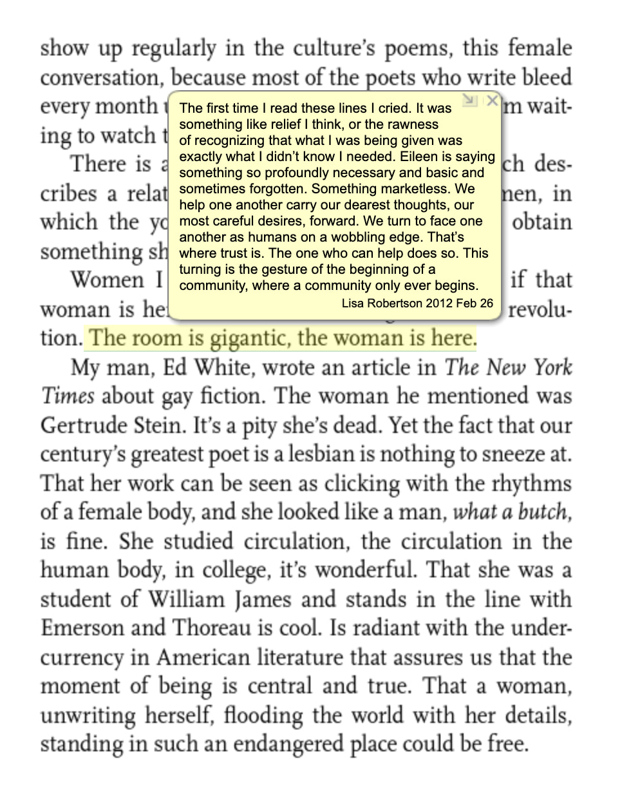
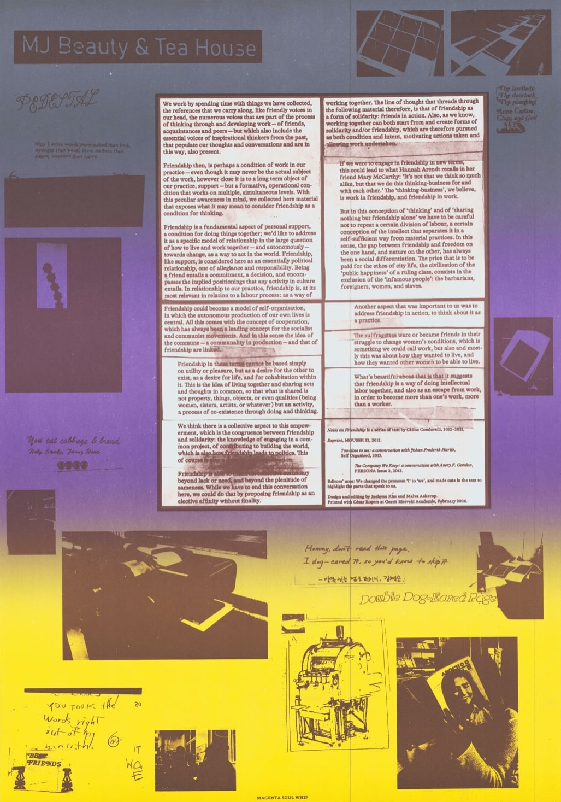
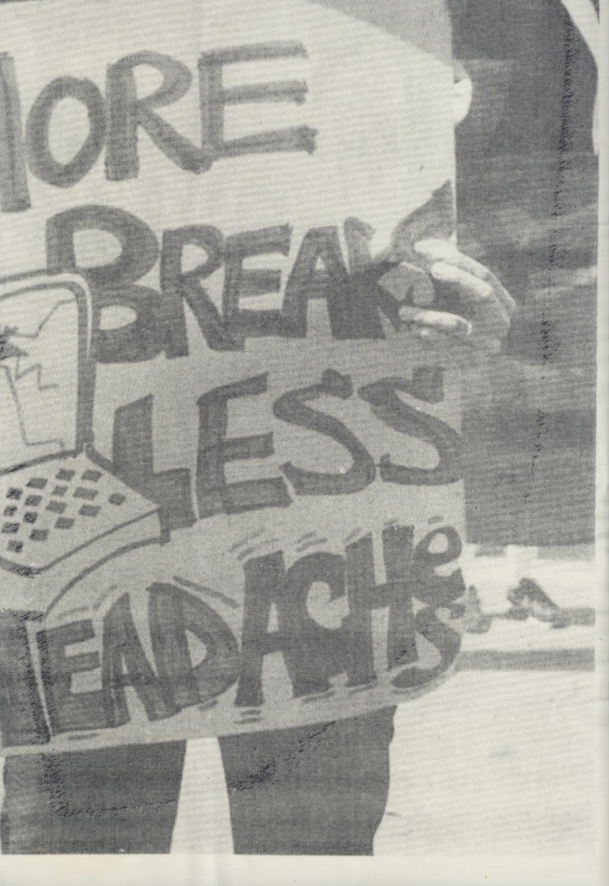

The Bitters Column is a bi-monthly publication about forming a feminist graphic design practice in conversation with others. This is the fifth — and special — issue, publishing a text titled ‘Women* Sitting at the Machine, Thinking’, written as an expanded editorial note of sorts, meditating on four words: ‘to form a practice’. Each column of the publication responds to a source of inspiration in relation to how feminist politics can be applied in critical editorial practices, such as how to approach typography, printing, and publishing. This text reflects on the making of the first three issues in March 2026. The structure is divided into three columns: the edge column recalls conversations with present voices in one’s own community, with a classmate and practitioners in the field. The center column is dedicated to a radical thinker from the past: the Marxist-feminist writer, typesetter, and poet Karen Brodine,as a dream conversation of sorts. The gutter column is an inquiry into archival material from the ’70s feminist print activism movement, in conversation with librarian Lisbeth Jørgensen at Kvindehuset — The Women’s House in Copenhagen. All together proposing ways of working in different collective formations with print and form-based structures that make discussion of the political.
funny, though. this set of codes slips through my hands, a loose grid of shadows with big gaps my own thoughts sneak
through…
—Karen Brodine, Woman Sitting at the Machine, Thinking
The Bitters Column, Issue 5: Women* Sitting at The Machine Thinking
Three Women sitting at the Machine, Thinking
The inquiry of this publication started in August 2025, as I was a resident at Rietlanden Women’s Office (RWO) in Amsterdam, with the co-founders and designers Elisabeth Rafstedt and Johanna Ehde. As we were planning how we would spend our time together over these four months, I confessed my desire to form a life-long feminist practice, and they offered to help. Their personal support covered not only the time shared at work, but in all aspects of life, such as finding housing, meeting people, and getting a bike. Support in this sense resonated well with a text by the poet Eileen Myles, where she writes:

There is a word in Italian, affidamento, which describes a relationship of trust between two women, in which the younger asks the elder to help her obtain something she desires. Women I know are turning around to see if that woman is here. The woman turning, that’s the revolution. The room is gigantic, the woman is here.1
1. Myles, The Lesbian Poet, Revolution: A Reader, ed. Lisa Robertson and Matthew Stadler (Portland, OR: Publication Studio, 2012), 438.
‘The Lesbian Poet’ was republished in 2012, within a book titled ‘Revolution: A Reader’ collected and annotated by the poet Lisa Robertson and writer Matthew Stadler. The book is a 1200-page portrait of revolutionary thought, putting forward the marginal as a site for resistance, where Robertson’s and Stadler’s annotations amplify, complicate, and respond to the texts and to each other. The construction of the book is a revolutionary act of collaboration and manifesto for a future of joyous collective change. In the margin of Myles’ text, Robertson’s annotation responds:

Eileen is saying something so profoundly necessary and basic and sometimes forgotten. Something marketless. We help one another carry our dearest thoughts, our most careful desires, forward. We turn to race one another as humans on a wobbling edge. That’s where trust is. The one who can help does so. This turning is the gesture of the beginning of a community where a community only ever begins.2
2. Myles, The Lesbian Poet, 118.
Affidamento translates from Italian to entrustment, and was used by The Milan Women’s Bookstore co-operative ‘to describe an ancient relational form as an indispensable way for women to achieve what they desire’.3 This word felt present in my experience at RWO, in Rafstedt’s and Ehde’s ways of working together, from writing emails aloud, to all three of us standing around one computer — always in conversation with each other and the design. As a reflection on their work methods and ethics, I started writing and editing texts that spoke to me, sourced from the bookshelf at RWO and my personal archive, compiling an index or manifesto of sorts about shaping a critical editorial practice. For me, critical is dedication to a life-long practice of feminist thinking through making in collaboration with others (despite the forces that strive for separation), and engaging with material as a way of living in it.
3. Alex Martinis Roe, To Become Two: Propositions for Feminist Collective Practice, chap. 2 (Berlin: Archive Books, 2018), 57.
Whilst roaming the bookshelf at RWO, I came across a conversation between the artist Celine Condorelli and writer Avery F. Gordon (2013), where Condorelli says:
I work by spending time with things I have collected, the references that I carry along, like friendly voices in my head, which also include the essential voices of inspirational thinkers from those that populate my thoughts and conversations and in this way, also present. Friendship then, is perhaps a condition of work in my practice — a fundamental aspect of personal support, a condition for doing things together.4
4. Condorelli and Gordon, The Company We Keep, PERSONA, Issue 2 (2013), 14.
As Rafstedt and Ehde offered to let me use their studio every Wednesday, I shared Condorelli’s text with peers, and we started meeting regularly for lunch. These gatherings sparked friendships, and revealed a longing of coming together around editorial matters and events, and led to organising a karaoke bar and a quilting club for Palestine. One of the collaborators was my classmate Jaehyun Kim, and from this reading we started printing together with PANTONE colours in the letterpress workshop in school.5
5. PANTONE colours: a proprietary, standardized colour swatch profile, that I was gifted by Rafstedt and Ehde on my last day in the office.
Condorelli’s text stayed in the back of our heads and informed us how our friendship was a condition for working together. We edited three texts by Condorelli and offset printed an A2 poster in two layers: our edited text in the center, and images and annotations from shared work-life in the large margins. [Fig. 3] Her writing spoke to us, particularly in this part:

Friendship in these terms cannot be based simply on utility or pleasure, but as a desire for the other to exist, as a desire for life, and for cohabitation within it. This is the idea of living together and sharing acts and thoughts in common, so that what is shared is not property, but an activity, a process of co-existence through doing and thinking.6
6. Condorelli, Too Close to See: A Conversation with Johan Frederik Hartle, in Self Organised (London: Open Editions, 2013), 70.
Here, Condorelli puts forward a desire for cohabitation as an active process merging friendship and work. In working together within the institution where we study (KABK), we noticed clashes and contradictions with one’s desire to lustfully make under the pressure of delivering expectations. These conditions made for a sense of loneliness, when moving towards developing separate graduation works, as an embodied experience of structural competition (who did what?), and racial and class privilege (who has time and space?). When working side-by-side, we had to be careful not to repeat a certain division of labor and efficient working methods, where the intellect separates from material practices. We became aware that working collectively is not an embodied utopia — it reveals power structures and hierarchies that are also political and murky. Practising graphic design in collaboration with others proposes slow processes, with all its hesitations and conflicts included.
As I mediated on collective practices, I came back to Robertson, in another of her texts (2019), where she concludes:
But now I believe that what the collective produced most importantly was a mode of autonomous, plural existence. Deeply, almost like animals, they understood how to live together. They made for a moment a precariously inhabitable social sculpture.7
7. Robertson, The Collective, in New Weathers (Toronto: Book*hug Press, 2019), 163.
This idea of an inhabitable social sculpture resonated with the publication I was compiling at RWO, originating from a desire to share texts one feels close to, and working with friends, which developed to The Bitters Column: a small-scale publishing project with a local readership — calling out for a plurality of past and present voices to merge on the page.
